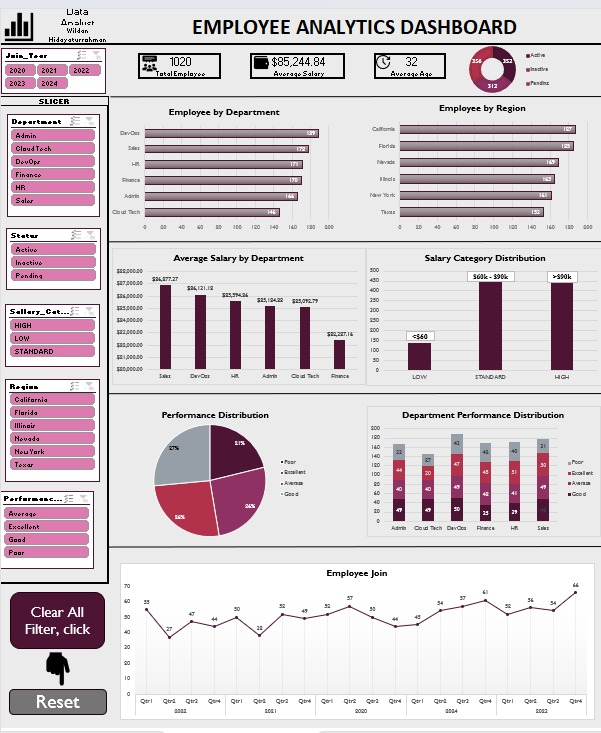
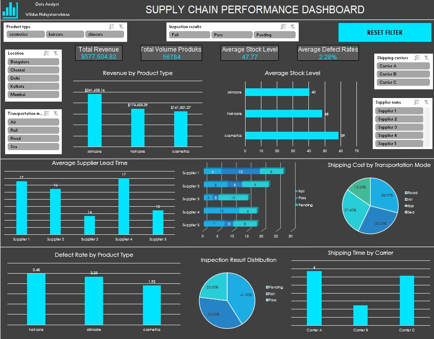
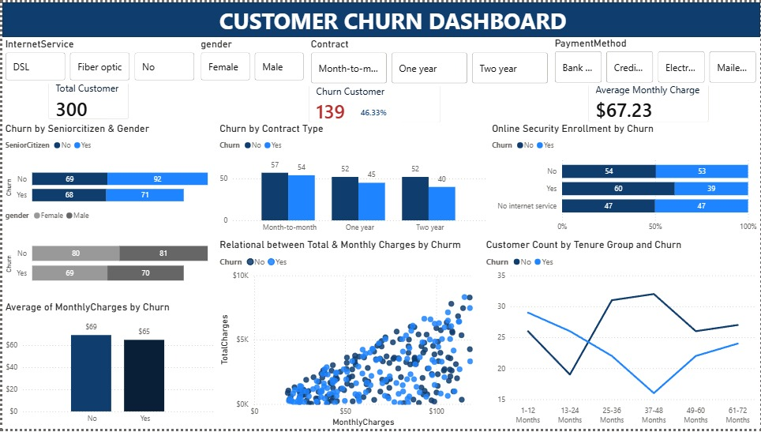
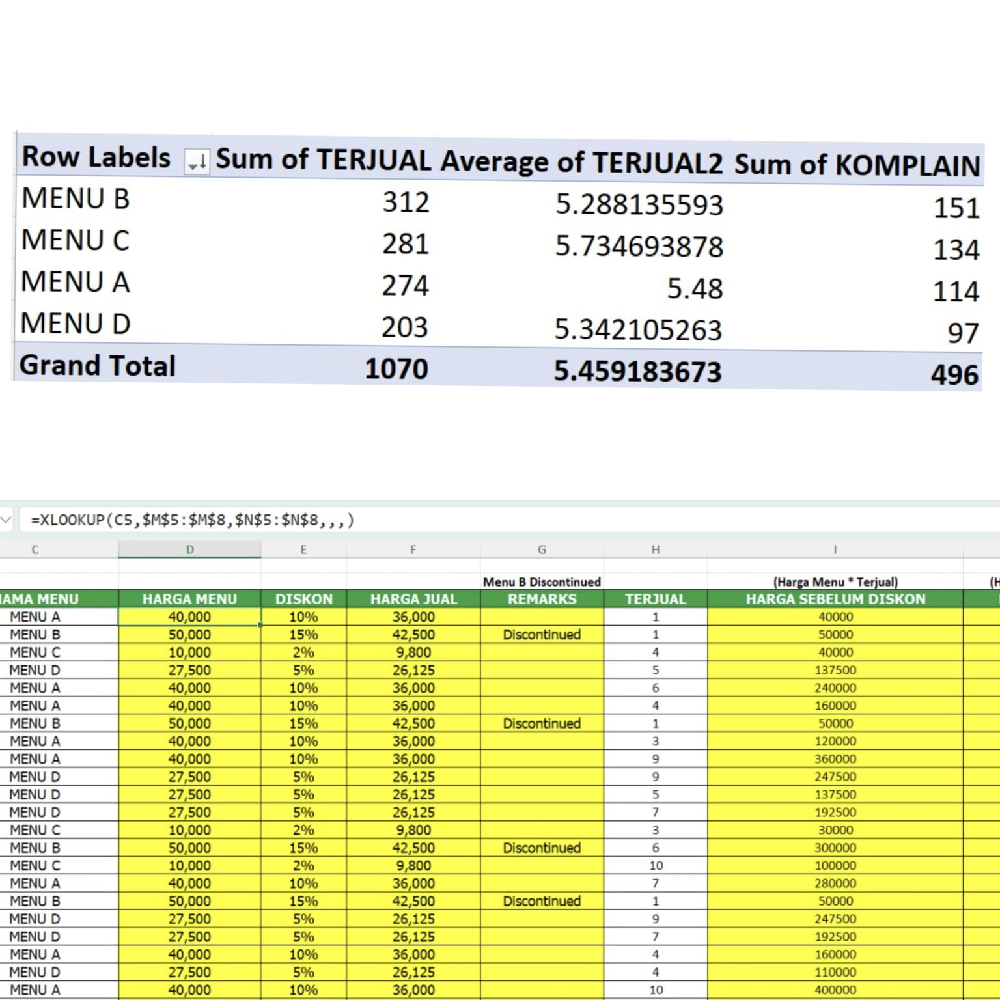

Wildan Hidayaturrohman
Data Analyst | Data Scientist | Machine Learning
Transforming Data Into Insights
2026

Transforming Data Into Insights
2026

My name is Wildan Hidayaturrohman, a fresh graduate in Mathematics from Diponegoro University (GPA 3.86/4.00) with a strong interest in Data Analytics, Data Science, and Machine Learning. I am passionate about transforming data into meaningful insights and developing data-driven solutions to solve real-world problems.
Through academic projects, a Data Administrator internship at Bank Muamalat Indonesia, and professional training programs at Dicoding, MySkill, and Inixindo x Eduparx. I have gained hands-on experience in data analysis, machine learning, deep learning, natural language processing, computer vision, recommendation systems, and financial forecasting. I have completed more than 10 data and AI projects, including the development of GoalPocket, a smart financial management platform powered by Machine Learning.

The Employee Analytics Dashboard was developed using Microsoft Excel to transform raw HR data into an interactive dashboard. The project involved data cleaning, data transformation, and dashboard development using Pivot Tables, Pivot Charts, Slicers, and Excel formulas such as IF, TRIM, LEFT, RIGHT, and XLOOKUP. A basic VBA automation was also implemented to create a Reset Filter feature for a better user experience. The dashboard provides interactive insights into workforce distribution, salary analysis, employee performance, and recruitment trends.

The Supply Chain Performance Dashboard was developed using Microsoft Excel to transform raw supply chain operational data into an interactive dashboard for monitoring and decision-making. The project involved data cleaning, data preparation, and dashboard development using Pivot Tables, Pivot Charts, and Slicers. A Basic VBA automation was also implemented to create a Reset Filter feature, allowing users to clear all filters with a single click. The dashboard provides interactive insights into operational performance, product performance, supplier evaluation, logistics performance, and production quality through clear and interactive visualizations.

The Customer Churn Analysis Dashboard was developed using Microsoft Power BI to transform customer data into an interactive analytics dashboard for understanding customer churn behavior. The project leveraged Power Query for data transformation, DAX Measures to build key business KPIs, and interactive visualizations to evaluate how customer contracts, service usage, subscription costs, and customer characteristics influence churn risk. The dashboard also features interactive filters, allowing users to dynamically explore customer data from multiple perspectives and generate more targeted insights to support customer retention strategies.

The Sales Performance Dashboard was developed using Microsoft Power BI to transform supermarket transaction data into an interactive business dashboard. The project involved data visualization and business intelligence using DAX Measures to calculate key KPIs such as Total Sales, Total Quantity, Total Profit, and Average Rating. The dashboard provides interactive insights into sales performance, profitability, product lines, branch performance, and customer satisfaction to support data-driven business decisions.

The Superstore Sales Performance Analysis project was developed using Google BigQuery and SQL to explore retail sales data and generate actionable business insights. The analysis leveraged Aggregate Functions, JOINs, CTEs, Window Functions, Ranking, and Running Totals to evaluate sales performance, product profitability, regional contributions, customer behavior, and sales trends over time. The findings helped identify business optimization opportunities and supported data-driven decision-making.

The Menu Sales Analysis project was developed using Microsoft Excel to transform raw sales data into actionable business insights. The analysis leveraged Excel formulas (XLOOKUP, VLOOKUP, IF) and Pivot Tables to automate data processing while evaluating sales performance, revenue, discounts, and customer complaints. The findings provided valuable insights into menu performance and supported strategic recommendations to improve service quality, sales performance, and overall business profitability.

The E-Commerce Customer Analytics project was developed using Python to transform e-commerce transaction data into actionable business insights. The analysis leveraged Pandas, NumPy, Matplotlib, Exploratory Data Analysis (EDA), and RFM Analysis to evaluate customer retention, shipping performance, customer satisfaction, and customer segmentation. The results were presented through an interactive Streamlit dashboard, allowing stakeholders to monitor key metrics and explore business insights more effectively.

Analyzed customer reviews from Google Play Store to classify sentiment and identify key factors influencing user satisfaction toward the Lazada application.

Developed predictive models to estimate disaster-related financial losses using historical disaster data and machine learning algorithms.

Designed an end-to-end ETL pipeline that extracts product data from websites, transforms and validates the data, then stores it into PostgreSQL and Google Sheets.

Collaborated in developing a financial management web application with an LSTM-based prediction model to forecast user balances and support smarter financial planning.

Created a recommendation system using Content-Based Filtering and Collaborative Filtering to suggest anime based on user preferences and viewing patterns.

Built a computer vision model using CNN to classify waste images into multiple categories, supporting automated waste management and recycling initiatives.